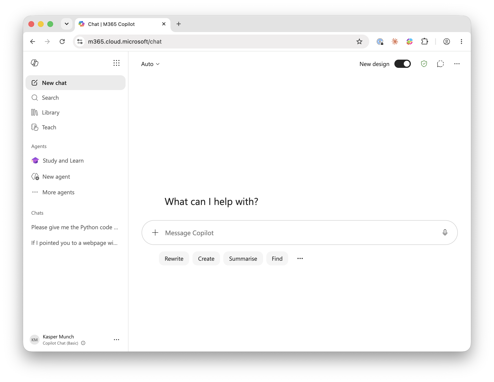

9 AI: Meet AI
Meet your new assistant
Microsoft Copilot
The assistant this course uses is Microsoft Copilot, which the university provides to you as a student. It is worth being clear about which Copilot this is, because Microsoft has attached the name to several quite different products. The one you want is the chat assistant that runs in a browser tab. It is not GitHub Copilot, which is a separate tool that suggests code inside an editor as you type, and which this course deliberately does not use, because the whole discipline being taught here depends on the assistant living somewhere you have to go to rather than appearing unasked beside your cursor. Your editor stays a place where nothing writes code but you.
Logging in
Go to the Copilot landing page at copilot.microsoft.com and choose Work rather than Web or Personal, then sign in with your university credentials. The Work option matters. It is what gives you access through the university’s agreement, and it is what keeps what you type covered by that agreement rather than by a consumer account’s terms.

If you find yourself in a session that does not show you as signed in with your university account, sign out entirely and start again from the landing page, because a half-signed-in session will sometimes work well enough to be confusing and then fail on something you needed.
What to expect of it
Copilot is a conversation. It keeps the earlier turns of that conversation in view, which is useful when you are refining a piece of code, and misleading when you have moved on to something else, because it will happily carry an assumption from twenty minutes ago into an answer about a different problem. When you change topic, start a new conversation. It costs nothing and it removes a whole class of confusing answers. It will also give you different answers to the same question asked twice, and this is not a fault to be worked around but a property to be used. Two answers that agree tell you a little. Two answers that disagree tell you a great deal, because at least one of them is wrong and you now know to find out which.
The version of the underlying model behind Copilot changes over time, without announcement, and answers you get this term may differ from answers a classmate got last term or that you get next month. Nothing in this course depends on a particular version, because nothing in this course asks you to trust an answer without checking it. That is precisely why the material is built the way it is.
Inside it sits a second mode worth knowing about from day one, the Study and Learn agent, which behaves less like a machine that answers and more like a patient teaching assistant that asks you questions back. You will meet it properly in a later week; for now, know that it exists and that “the assistant” from this point on can mean either mode depending on what a given exercise asks for.
Finding your past chats
Every conversation you have is saved automatically in the left-hand sidebar under a “Chats” section, listed with a short title generated from your first message. If you want to return to something you asked yesterday or last week, you don’t need to remember exact wording, just scroll down that list and click the chat to reopen it with full history intact. There’s also a “Search” option near the top of the sidebar if you have many chats and want to find one by keyword, and a “Library” section where saved or pinned content may be organized separately. Starting a new topic is as simple as clicking “New chat” at the top, which keeps your conversations organized rather than mixing unrelated questions into one long thread.
Moving code between Copilot and your editor
When Copilot gives you a code answer, it will normally appear in a distinct code block with its own formatting (often with a small copy icon in the corner). Clicking that icon copies the entire snippet to your clipboard in one go, which you can then paste directly into your code editor with the usual paste shortcut. Going the other direction, if you want Copilot to look at code you’ve already written, copy it from your editor and paste it into the message box, ideally with a bit of explanation like “here’s my code, it’s giving me an IndexError, can you help me find the bug.” Pasting the actual code rather than just describing the problem gives Copilot precise details to work with, and it’s good practice to also copy any error message text exactly as it appears rather than paraphrasing it.
Keeping it in the browser
Keep Copilot in a browser tab, separate from your editor (vscode), which stays an AI-free space for the whole course. No Copilot extension enabled, no inline suggestions, no auto-completion, no chat. We do this because you cannot learn to judge code you did not write until you have spent real time writing code yourself, one substitution and one reduction at a time. Keeping the AI separate, from where you work yourself, makes it explicit when and how you use the AI. This is not an arbitrary restriction. Every habit this material builds depends on there being a visible boundary between the code you wrote and the code the assistant proposed, and on your having to make a deliberate decision to cross it. An assistant that completes your lines while you type erases that boundary, and with it the moment at which you would have read what you were about to accept. You will move text across the boundary in both directions, pasting a function or an error message into the chat and copying a suggestion back out, and every one of those crossings is a point at which you read what you are moving. That is the point.
Keep them separate
The browser is where you consult the AI, the editor is where you think and do your work.
Badges: what you are allowed to ask of it, and when
Not every exercise permits the same amount of help, and the course marks this explicitly rather than leaving it to guesswork. All exercises carry a small badge naming the role it the AI is allowed to play, and the roles form a ladder that gets more permissive as the term goes on and your judgment gets sharper: Early on, a badge such as AI: Explainer means the assistant may explain something to you, an error message, a line of code, but you still do the deciding and the running yourself. Much later, a badge such as AI: Developer means you may hand it a real piece of work, provided you have already learned to specify it exactly and verify what comes back. You never get a badge you have not earned the skills for yet; the ladder is cumulative, and each step assumes everything below it. Some exercises carry no AI badge at all but instead a lock, SOLO, which means exactly what it says: no assistant, do it yourself first. SOLO exercises are not a punishment. They are where you build the very judgment the badges later ask you to spend. If you need to be reminded what a badge represents, clicking it will take you to its description on the course introduction page.
The role ladder
Explainer · Comparer · Drafter · Collaborator · Developer
The logbook
Once a week, you will write one entry in your logbook: a short, candid note about something the assistant got right, something it got wrong, and how you knew which was which. You already wrote the first one, in the exercise at the end of last note. Keep the habit going. By the end of the term the logbook will be a record of your own growing skill at telling a plausible answer from a correct one, which is a more useful thing to have at the end of a course than almost anything else you will produce.
Exercise 9-1
Ask the assistant, in the browser, what a license badge and a SOLO marker are for in a course, without telling it anything about this course specifically. Read its guess. Then compare it against what this note just told you. Where did it match, and where did it just produce something plausible-sounding that happened to be wrong for our purposes? This is the smallest possible version of the whole term: ask, read, check against the real thing.
Exercise 9-2
Log into Copilot now, choosing Work rather than Web or Personal. If anything about the sign-in looks off, sign out completely and start again from the landing page. Once you’re in, find the Chats list, the Search box, and the Library. Use Search to look for a conversation you haven’t had yet, and confirm it correctly finds nothing. Then start a new chat and ask it, in your own words, what the Study and Learn agent is and how it’s supposed to behave differently from an ordinary answer. Read what it tells you, then check that against what this note said above about it, where the two agree, and where the assistant’s account is thinner, or flatly different.
Exercise 9-3
Open two separate new chats, not one continued conversation. In each, ask the exact same question, something ordinary you already know the answer to works best, such as what a SyntaxError message means. Before you compare the two answers, decide what you expect: identical wording, similar substance in different words, or an actual disagreement about the facts. Then read them side by side. If they only differ in phrasing, that is the case this note called telling you a little. If they disagree about something substantive, you now know at least one of them is wrong, and working out which is more useful than either answer taken alone.
Exercise 9-4
Write a short Python script with one deliberate mistake in it, a missing colon or a misspelled keyword is enough, and run it from the terminal the way you ran your very first program, so you get a real traceback. Copy the code and the exact error text, paste both into a new chat, and ask what is wrong, pasting the error exactly rather than describing it in your own words. Read the explanation, then make the fix yourself in your editor and run it again to confirm it actually works, rather than trusting that it does because the explanation sounded right.
For your logbook this week, note which badge you are most looking forward to earning, and which one makes you the most nervous, and why.